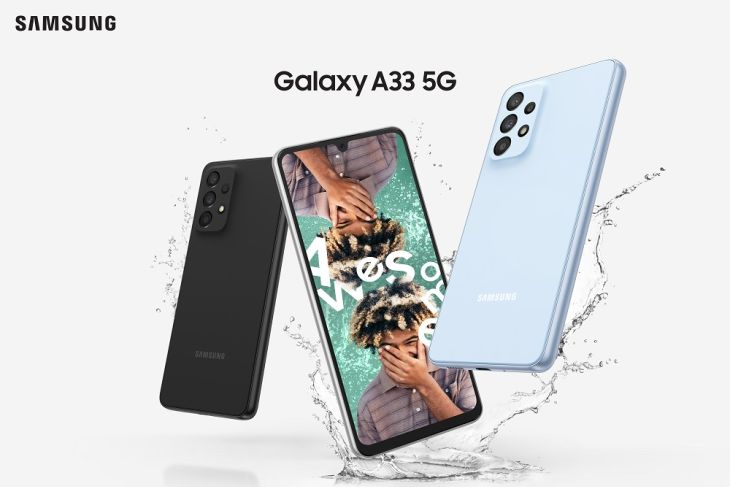
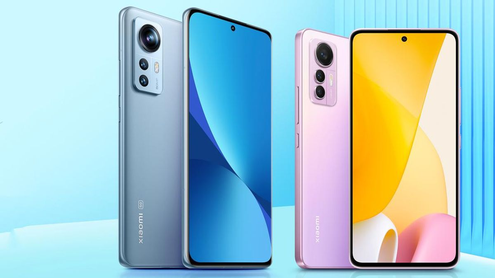
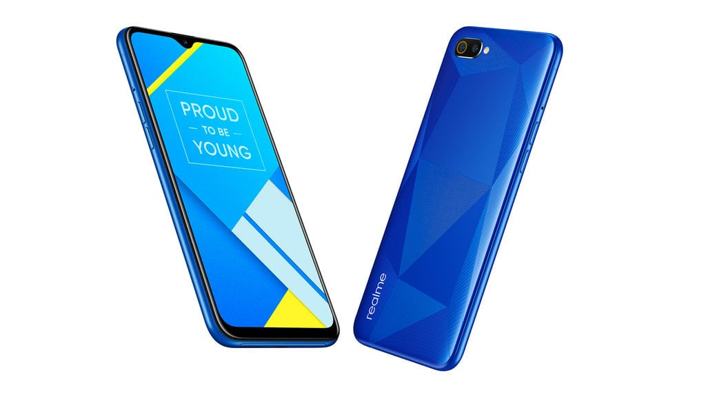

Samsung merupakan salah satu produsen smartphone terbesar di dunia dan telah memiliki penggemar yang banyak di seluruh dunia.
Samsung dikenal sebagai merek yang mengeluarkan produk-produk smartphone dengan spesifikasi yang tinggi dan inovatif serta didukung dengan teknologi yang canggih.
Samsung juga dikenal dengan berbagai inovasi dan fitur-fitur baru pada produk-produk smartphone mereka, seperti layar AMOLED, S Pen, dan kamera dengan resolusi tinggi.
Samsung juga mengeluarkan berbagai produk smartphone dengan harga yang bervariasi, sehingga dapat memenuhi kebutuhan dan budget pengguna dari berbagai kalangan.
Samsung memiliki reputasi yang baik dalam hal kualitas dan daya tahan produk mereka.

Xiaomi adalah produsen smartphone asal China yang telah memiliki penggemar yang banyak di seluruh dunia. Merek ini dikenal dengan produk-produknya yang memiliki spesifikasi tinggi namun dijual dengan harga yang terjangkau.
Selain smartphone, Xiaomi juga memproduksi berbagai produk teknologi lainnya seperti laptop, aksesoris smartphone, dan perangkat IoT.
Xiaomi dikenal dengan MIUI, antarmuka pengguna pada smartphone Xiaomi, yang menawarkan banyak fitur dan pengaturan yang dapat disesuaikan.
Produk-produk Xiaomi juga dikenal dengan daya tahan baterai yang baik dan kamera yang mumpuni.
Xiaomi adalah perusahaan yang terus berinovasi dan merilis produk-produk baru dengan teknologi terbaru, seperti pengenalan wajah, pemindai sidik jari di layar, dan 5G.

Realme adalah merek smartphone yang berbasis di China, didirikan pada tahun 2018. Meskipun masih relatif baru, Realme telah menjadi produsen smartphone yang cukup populer di pasar global.
Realme menghadirkan smartphone dengan spesifikasi yang tinggi dengan harga yang terjangkau, sehingga menjadi daya tarik bagi banyak konsumen.
Produk-produk Realme dikenal dengan desain yang menarik dan beragam pilihan warna yang menarik.
Realme juga menawarkan berbagai fitur canggih pada produk-produknya seperti kamera dengan resolusi tinggi, baterai yang tahan lama, dan prosesor yang cepat.
Realme juga fokus pada pengembangan teknologi 5G dan menghadirkan produk-produk dengan dukungan 5G untuk memenuhi kebutuhan konsumen yang membutuhkan koneksi internet yang cepat.